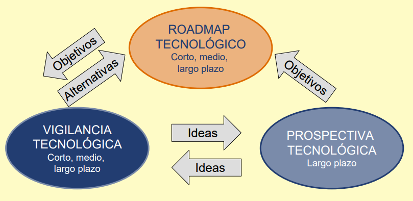
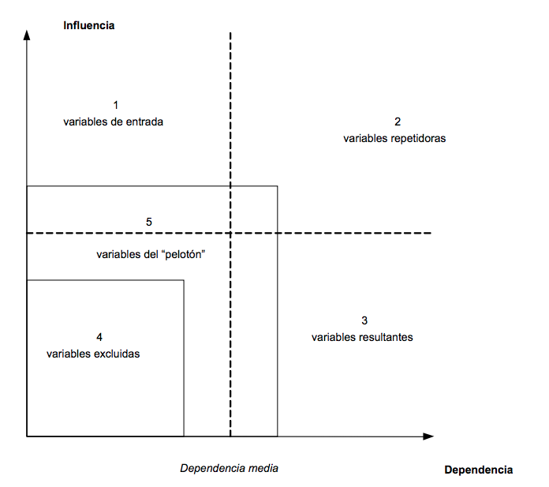

Curso Tecnologías Emergentes en Salud
Presentación y Programa
Jaime Andrés García
Universidad CES
Medellín, 2018
Objetivo General (1/2)
Promover el empleo de la vigilancia tecnológica y el análisis de tecnologías emergentes como disciplinas científicas que permiten la construcción tecnológica y social del futuro mediante la identificación de los escenarios actuales y potenciales futuros de la ciencia, tecnología y la sociedad.
Objetivo General (2/2)
Se desarrollarán las capacidades del monitoreo y vigilancia sistemática de los aspectos sociales, económicos, políticos y tecnológicos que afectan el desarrollo de programas, proyectos y productos.
Objetivos (1/3)
Como resultado del curso, el o la estudiante estará en capacidad de:
1. Realizar análisis del contexto general social, político y económico asociado a una investigación de vigilancia tecnológica y análisis de tecnologías emergentes
2. Desarrollar análisis de investigación a partir de la construcción de ecuaciones de búsqueda y el análisis de minería de texto
Objetivos (2/3)
3. Desarrollar análisis de patentes a partir de la revisión sistemática y el uso de técnicas de análisis y visualización de datos
4. Presentar informes de estudios de vigilancia tecnológica fáciles de consumir a partir de visualizaciones de datos e infográficos
Objetivos (3/3)
5. Formular proyectos para el desarrollo de estudios de vigilancia tecnológica y análisis de tecnologías emergentes
6. Examinar y evaluar estudios de vigilancia tecnológica y análisis de tecnologías emergentes realizados por consultores, empresas, gobiernos, etc.
Contenido del Curso
1. Vigilancia Tecnológica y Análisis de Tecnologías Emergentes - Análisis del Entorno (Environmental Scanning)
2. Vigilancia Tecnológica y Análisis de Tecnologías Emergentes - Análisis de Investigaciones
3. Vigilancia Tecnológica y Análisis de Tecnologías Emergentes - Análisis de Patentes
Evaluación del Curso
Análisis del Entorno y Contexto General (30 %)
Análisis de Investigaciones (35 %)
Análisis de Patentes - Exposición - Infográfico (35 %)
Introdución - Descripción de Trabajo
Technology Foresight is systematically attempting
to look in long-term future science, technology,
economy, society to identify strategic areas
and emerging technologies
(Martin, 1995)
Infográficos - Resultados Vigilancia y Análisis - Entrega 3

(Tay, 2013)
Infográficos - Resultados Vigilancia y Análisis - Entrega 3
(KMPG, 2015)
Infográficos - Resultados Vigilancia y Análisis - Entrega 3

(EnvionsingTech, 2012)
Infográficos - Resultados Vigilancia y Análisis - Entrega 3

(EnvionsingTech, 2012)
Infográficos - Herramientas
Inspiración: http://www.myforesight.my/
1 página - Diseño Libre
Creación: PiktoChart, Infogram, Canva
Vigilancia Tecnológica
Technology Watch consists in systematically capturing, analysing, disseminating
and exploiting useful technical information
for the watch and growth of a company
(Escorsa, 2001)
Análisis de Patentes - Lista y Descripción de Patentes
(Garcia, 2018)
Análisis de Patentes - Lista y Descripción de Inventores
(Garcia, 2018)
Análisis de Patentes - Lista y Descripción de Empresas Publicadoras
(Garcia, 2018)
Análisis de Patentes - Periodo y Número de registros totales
(Garcia, 2018)
Patentes - Herramientas
Búsqueda y Análisis: Lens, PatentScope, Google Patents
Otras: https://wipo-analytics.github.io/databases.html
Análisis de Investigaciones - Top Investigaciones
(Garcia, 2018)
Análisis de Investigaciones - Conceptos, Herramientas y Tecnologías Claves
(Arango, 2018)
Análisis de Investigaciones - Conceptos, Herramientas y Tecnologías Claves

(Garcia, 2018)
Análisis de Investigaciones - Árbol de Investigaciones
(Arango, 2018)
Análisis de Investigaciones - Análisis de Países

(Garcia, 2018)
Análisis de Investigaciones - Análisis de Instituciones
(Arango, 2018)
Análisis de Investigaciones - Publicaciones por Año
(Arango, 2018)
Análisis de Investigaciones - Ecuación de Búsqueda
(Garcia, 2018)
Metodología de Vigilancia Tecnológica
(Bernhardt, 1994)
Investigaciones - Herramientas
Análisis y Vis: Vos Viewer, CitNetExplorer, Gephi, Tree of Science, Tableau, PiktoChart, Infogram
Búsqueda: Scopus, Web of Science, IEEE Xplore, Pubmed, Ovid, Science Direct
Principales Noticias Sociales, Económicas, Políticas y Científicas relacionadas
(Garcia, 2018)
Principales Noticias Sociales, Económicas, Políticas y Científicas relacionadas
(Garcia, 2018)
Principales Noticias Sociales, Económicas, Políticas y Científicas relacionadas
(Garcia, 2018)
Principales Noticias Sociales, Económicas, Políticas y Científicas relacionadas
(Garcia, 2018)
Creación de Feed de Noticias
(Garcia, 2018)
Principales Organizaciones relacionadas junto a los bienes o servicios
(Garcia, 2018)
Principales Publicaciones en Redes Sociales
(Garcia, 2018)
Creación de Alertas de Búsqueda (En cada entrega actualizar)
(Garcia, 2018)
Tendencias de Búsqueda (Al menos 10)
(Garcia, 2018)
Términos de Búsqueda Inicial y Evolución
(Garcia, 2018)
Análisis del Entorno - Herramientas
Análisis y Vis: Google Search, Google Trends, IBM Watson News Explorer, Unfiltered News, Newsmap
Monitoreo: Hootsuite, Google Alerts, FlipBoard, Google News Stand, Google Chrome
Pautas de Evaluación
Pautas Entrega 1Pautas Entrega 2
Pautas Entrega 3
Vigilancia, Prospectiva y Roadmapping
(Escorsa, 2001)
Prospectiva - Escenarios (No hace parte del trabajo)
(Gausemeier, 1998)
Análisis Morfológico

(Gausemeier, 1998)
Construcción de Escenarios
(Godet, 2018)
Radar de Variables

(Godet, 2018)
Matriz de Influencia
(Godet, 2007)
Lista de Variables (Mínimo 30)
(Godet, 2007)

(Godet - Metodología Prospectiva, 2007)
Prospectiva - Herramientas
Guía: http://es.laprospective.fr/Actualidades/151-El-Manual-de-Prospectiva-Estrat%C3%A9gica.html
MICMAC: http://www.micmacprospective.com/en
MORPHOL y ESCENARIOS: http://www.scenaringtools.com/en
Bibliografía
Coates, V., Farooque, M., Klavans, R., Lapid, K., Linstone, H. A., Pistorius, C., & Porter, A. L. (2001). On the Future of Technological Forecasting. Technological Forecasting and Social Change, 67(1), 1–17. doi:10.1016/S0040-1625(00)00122-0
Kostoff, R. N., & Schaller, R. R. (2001). Science and technology roadmaps. Engineering Management, IEEE Transactions on, 48(2), 132–143.
Lucheng, H., Xin, L., & Wenguang, L. (2010). Research on emerging technology selection and assessment by technology foresight and fuzzy consistent matrix. foresight, 12(2), 77–89. doi:10.1108/14636681011035762
Martin, B. R. (1995). Foresight in science and technology. Technology Analysis & Strategic Management, 7(2), 139–168.
Bibliografía
The Washington Post. (2009, January 4). The Next Next Things. Retrieved mayo 2, 2012, from http://www.washingtonpost.com/wp-srv/opinions/outlook/nextthings/
Martino, J. P. (2003). A review of selected recent advances in technological forecasting. Technological Forecasting and Social Change, 70(8), 719–733.
Porter, A. L., Cunningham, S. W., Roper, A. T., Banks, J., Mason, T. W., & Rossini, F. A. (2011). Forecasting and Management of Technology. John Wiley & Sons.
Kostoff, R. N., & Schaller, R. R. (2001). Science and technology roadmaps. Engineering Management, IEEE Transactions on, 48(2), 132–143.
Bibliografía
Gausemeier, J., Fink, A., & Schlake, O. (1998). Scenario Management: An Approach to Develop Future Potentials. Technological Forecasting and Social Change, 59(2), 111–130. doi:10.1016/S0040-1625(97)00166-2
Islam, T., & Meade, N. (1997). The diffusion of successive generations of a technology: A more general model. Technological Forecasting and Social Change, 56(1), 49–60. doi:10.1016/S0040-1625(97)00030-9
Phaal, R., Farrukh, C. J. P., & Probert, D. R. (2004). Technology roadmapping—A planning framework for evolution and revolution. Technological Forecasting and Social Change, 71(1–2), 5–26. doi:10.1016/S0040-1625(03)00072-6
Ryu, J., & Byeon, S. C. (2011). Technology level evaluation methodology based on the technology growth curve. Technological Forecasting and Social Change, 78(6), 1049–1059. doi:10.1016/j.techfore.2011.01.003
Shin, T. (1998). Using Delphi for a Long-Range Technology Forecasting, and Assessing Directions of Future R&D Activities The Korean Exercise. Technological Forecasting and Social Change, 58(1–2), 125–154. doi:10.1016/S0040-1625(97)00053-X